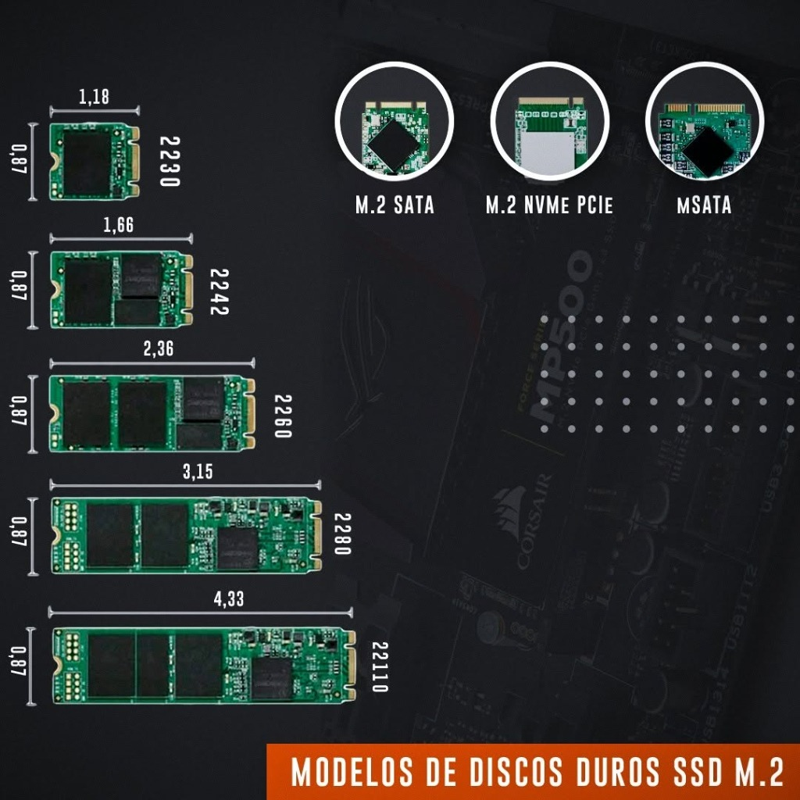

¿Cómo saber qué SSD M.2 es compatible con tu laptop? (NVMe vs SATA)
Aprende a diferenciar las muescas M-Key y B+M Key, además de conocer las medidas exactas (2280, 2242, 2230) antes de comprar para no perder tu dinero.
Leer Guía CompletaConoce las medidas exactas en pulgadas y milímetros antes de comprar tu unidad para asegurar 100% de compatibilidad con tu laptop o tarjeta madre.

El estándar más utilizado en laptops modernas, PCs de escritorio y consolas PS5. Excelente disipación y variedad de capacidades (hasta 4TB).
Haz clic en cualquiera de los artículos para abrir la explicación detallada y los pasos recomendados por nuestro equipo técnico.
Aprende a diferenciar las muescas M-Key y B+M Key, además de conocer las medidas exactas (2280, 2242, 2230) antes de comprar para no perder tu dinero.
Leer Guía CompletaDescubre qué componentes priorizar: ¿Más procesador, más memoria RAM o una tarjeta gráfica dedicada? Consejos para renderizar sin sobrecalentar el equipo.
Leer Guía CompletaEn nuestra ciudad, las temperaturas ambientales extremas secan la pasta térmica en pocos meses provocando Thermal Throttling. Aprende cada cuánto cambiarla.
Leer Guía CompletaEscríbenos directamente o visítanos en Edif. Flamingo (Maracaibo) para hacer el diagnóstico físico de tu equipo.
Consultar a Soporte al +58 4246402032